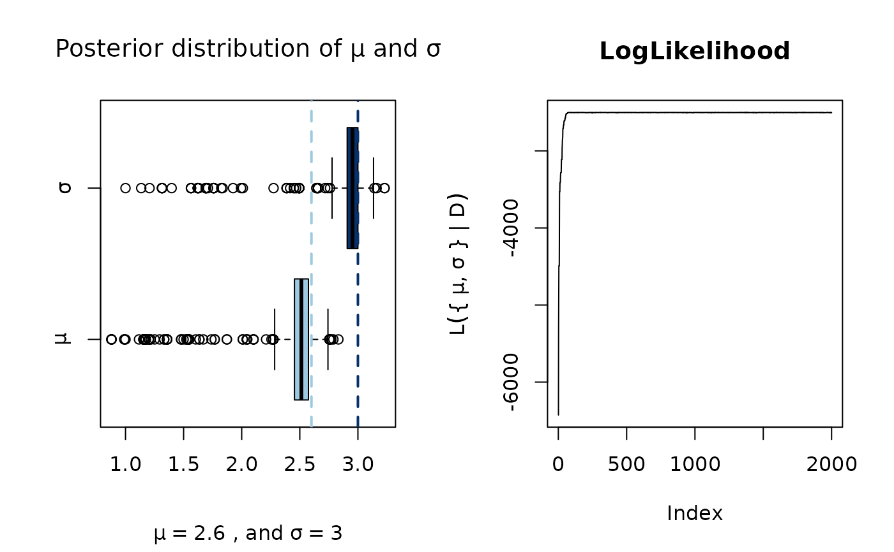

A flexible implementation of the Metropolis-Hastings MCMC algorithm.
MCMC( initial, fun, nsteps, ..., nchains = 1L, burnin = 0L, thin = 1L, kernel = kernel_normal(), multicore = FALSE, conv_checker = NULL, cl = NULL, progress = interactive() && !multicore, chain_id = 1L ) # S3 method for mcmc MCMC( initial, fun, nsteps, ..., nchains = 1L, burnin = 0L, thin = 1L, kernel = kernel_normal(), multicore = FALSE, conv_checker = NULL, cl = NULL, progress = interactive() && !multicore, chain_id = 1L ) # S3 method for mcmc.list MCMC( initial, fun, nsteps, ..., nchains = 1L, burnin = 0L, thin = 1L, kernel = kernel_normal(), multicore = FALSE, conv_checker = NULL, cl = NULL, progress = interactive() && !multicore, chain_id = 1L ) # S3 method for default MCMC( initial, fun, nsteps, ..., nchains = 1L, burnin = 0L, thin = 1L, kernel = kernel_normal(), multicore = FALSE, conv_checker = NULL, cl = NULL, progress = interactive() && !multicore, chain_id = 1L )
| initial | Either a numeric matrix or vector, or an object of class coda::mcmc or coda::mcmc.list (see details). initial values of the parameters for each chain (See details). |
|---|---|
| fun | A function. Returns the log-likelihood. |
| nsteps | Integer scalar. Length of each chain. |
| ... | Further arguments passed to |
| nchains | Integer scalar. Number of chains to run (in parallel). |
| burnin | Integer scalar. Length of burn-in. Passed to
coda::mcmc as |
| thin | Integer scalar. Passed to coda::mcmc. |
| kernel | An object of class fmcmc_kernel. |
| multicore | Logical. If |
| conv_checker | A function that receives an object of class coda::mcmc.list,
and returns a logical value with |
| cl | A |
| progress | Logical scalar. When set to |
| chain_id | Integer scalar (internal use only). This is an argument
passed to the kernel function and it allows it identify in which of the
chains the process is taking place. This could be relevant for some kernels
(see |
An object of class coda::mcmc from the coda
package. The mcmc object is a matrix with one column per parameter,
and nsteps rows. If nchains > 1, then it returns a coda::mcmc.list.
This function implements MCMC using the Metropolis-Hastings ratio with flexible transition kernels. Users can specify either one of the available transition kernels or define one of their own (see kernels). Furthermore, it allows easy parallel implementation running multiple chains in parallel. In addition, we incorporate a variety of convergence diagnostics, alternatively the user can specify their own (see convergence-checker).
We now give details of the various options included in the function.
By default, if initial is of class mcmc, MCMC will take the last nchains
points from the chain as starting point for the new sequence. If initial is
of class mcmc.list, the number of chains in initial must match the nchains
parameter.
If initial is a vector, then it must be of length equal to the number of
parameters used in the model. When using multiple chains, if initial is not
an object of class mcmc or mcmc.list, then it must be a numeric matrix
with as many rows as chains, and as many columns as parameters in the model.
When nchains > 1, the function will run multiple chains. Furthermore,
if cl is not passed, MCMC will create a PSOCK cluster
using parallel::makePSOCKcluster with
parallel::detectCores
clusters and attempt to execute using multiple cores. Internally, the function does
the following:
# Creating the cluster ncores <- parallel::detectCores() ncores <- ifelse(nchains < ncores, nchains, ncores) cl <- parallel::makePSOCKcluster(ncores) # Loading the package and setting the seed using clusterRNGStream invisible(parallel::clusterEvalQ(cl, library(fmcmc))) parallel::clusterSetRNGStream(cl, .Random.seed)
When running in parallel, objects that are
used within fun must be passed through ..., otherwise the cluster
will return with an error.
The user controls the initial value of the parameters of the MCMC algorithm
using the argument initial. When using multiple chains, i.e., nchains > 1,
the user can specify multiple starting points, which is recommended. In such a
case, each row of initial is use as a starting point for each of the
chains. If initial is a vector and nchains > 1, the value is recycled, so
all chains start from the same point (not recommended, the function throws a
warning message).
By default, no automatic stop is implemented. If one of the functions in
convergence-checker is used, then the MCMC is done by bulks as specified
by the convergence checker function, and thus the algorithm will stop if,
the conv_checker returns TRUE. For more information see convergence-checker.
Brooks, S., Gelman, A., Jones, G. L., & Meng, X. L. (2011). Handbook of Markov Chain Monte Carlo. Handbook of Markov Chain Monte Carlo.
# Univariate distributed data with multiple parameters ---------------------- # Parameters set.seed(1231) n <- 1e3 pars <- c(mean = 2.6, sd = 3) # Generating data and writing the log likelihood function D <- rnorm(n, pars[1], pars[2]) fun <- function(x) { x <- log(dnorm(D, x[1], x[2])) sum(x) } # Calling MCMC, but first, loading the coda R package for # diagnostics library(coda) ans <- MCMC( fun, initial = c(mu=1, sigma=1), nsteps = 2e3, kernel = kernel_normal_reflective(scale = .1, ub = 10, lb = 0) ) # Ploting the output oldpar <- par(no.readonly = TRUE) par(mfrow = c(1,2)) boxplot(as.matrix(ans), main = expression("Posterior distribution of"~mu~and~sigma), names = expression(mu, sigma), horizontal = TRUE, col = blues9[c(4,9)], sub = bquote(mu == .(pars[1])~", and"~sigma == .(pars[2])) ) abline(v = pars, col = blues9[c(4,9)], lwd = 2, lty = 2) plot(apply(as.matrix(ans), 1, fun), type = "l", main = "LogLikelihood", ylab = expression(L("{"~mu,sigma~"}"~"|"~D)) )par(oldpar) # In this example we estimate the parameter for a dataset with ---------------- # With 5,000 draws from a MVN() with parameters M and S. # \donttest{ # Loading the required packages library(mvtnorm) library(coda) # Parameters and data simulation S <- cbind(c(.8, .2), c(.2, 1)) M <- c(0, 1) set.seed(123) D <- rmvnorm(5e3, mean = M, sigma = S) # Function to pass to MCMC fun <- function(pars) { # Putting the parameters in a sensible way m <- pars[1:2] s <- cbind( c(pars[3], pars[4]), c(pars[4], pars[5]) ) # Computing the unnormalized log likelihood sum(log(dmvnorm(D, m, s))) } # Calling MCMC ans <- MCMC( initial = c(mu0=5, mu1=5, s0=5, s01=0, s2=5), fun, kernel = kernel_normal_reflective( lb = c(-10, -10, .01, -5, .01), ub = 5, scale = 0.01 ), nsteps = 1e4, thin = 20, burnin = 5e3 ) # Checking out the outcomes plot(ans)summary(ans)#> #> Iterations = 5020:10000 #> Thinning interval = 20 #> Number of chains = 1 #> Sample size per chain = 250 #> #> 1. Empirical mean and standard deviation for each variable, #> plus standard error of the mean: #> #> Mean SD Naive SE Time-series SE #> mu0 0.008737 0.01213 0.0007670 0.0007513 #> mu1 0.987976 0.01426 0.0009017 0.0011533 #> s0 0.796773 0.01758 0.0011120 0.0014277 #> s01 0.186875 0.01387 0.0008772 0.0011180 #> s2 0.995108 0.02097 0.0013263 0.0017226 #> #> 2. Quantiles for each variable: #> #> 2.5% 25% 50% 75% 97.5% #> mu0 -0.01263 -0.0001578 0.008583 0.01641 0.03349 #> mu1 0.96236 0.9782262 0.987504 0.99741 1.01570 #> s0 0.76199 0.7858717 0.794944 0.80839 0.83253 #> s01 0.15779 0.1768917 0.186439 0.19570 0.21376 #> s2 0.95275 0.9812928 0.995647 1.00786 1.03104 #># Multiple chains ----------------------------------------------------------- # As we want to run -fun- in multiple cores, we have to # pass -D- explicitly (unless using Fork Clusters) # just like specifying that we are calling a function from the # -mvtnorm- package. fun <- function(pars, D) { # Putting the parameters in a sensible way m <- pars[1:2] s <- cbind( c(pars[3], pars[4]), c(pars[4], pars[5]) ) # Computing the unnormalized log likelihood sum(log(mvtnorm::dmvnorm(D, m, s))) } # Two chains ans <- MCMC( initial = c(mu0=5, mu1=5, s0=5, s01=0, s2=5), fun, nchains = 2, kernel = kernel_normal_reflective( lb = c(-10, -10, .01, -5, .01), ub = 5, scale = 0.01 ), nsteps = 1e4, thin = 20, burnin = 5e3, D = D )#> Warning: While using multiple chains, a single initial point has been passed via `initial`: c(5, 5, 5, 0, 5). The values will be recycled. Ideally you would want to start each chain from different locations.summary(ans)#> #> Iterations = 5020:10000 #> Thinning interval = 20 #> Number of chains = 2 #> Sample size per chain = 250 #> #> 1. Empirical mean and standard deviation for each variable, #> plus standard error of the mean: #> #> Mean SD Naive SE Time-series SE #> mu0 0.008355 0.01255 0.0005613 0.0006234 #> mu1 0.986247 0.01409 0.0006303 0.0007920 #> s0 0.798205 0.01607 0.0007188 0.0008586 #> s01 0.186311 0.01297 0.0005798 0.0006972 #> s2 0.993651 0.01904 0.0008516 0.0011712 #> #> 2. Quantiles for each variable: #> #> 2.5% 25% 50% 75% 97.5% #> mu0 -0.01498 -0.0004055 0.008546 0.01686 0.03341 #> mu1 0.95931 0.9769933 0.985743 0.99658 1.01309 #> s0 0.76850 0.7871833 0.797177 0.80860 0.83010 #> s01 0.16187 0.1777071 0.186060 0.19472 0.21221 #> s2 0.95513 0.9819994 0.994325 1.00702 1.02738 #># }